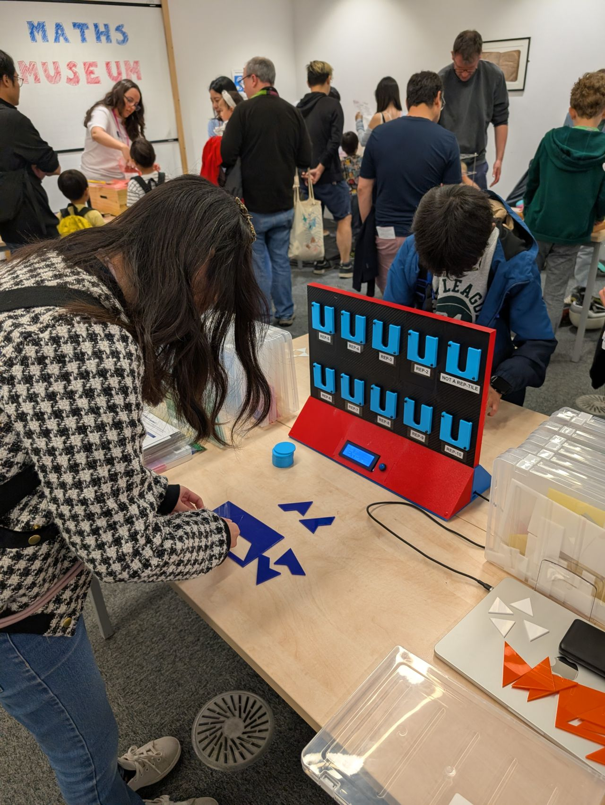
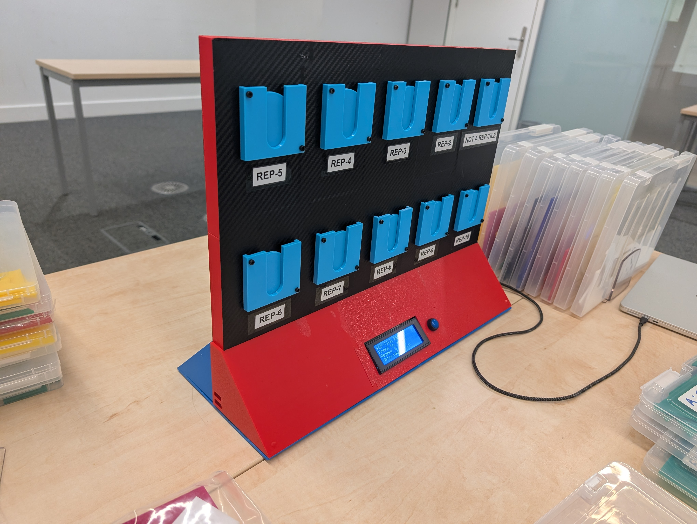

In mathematics, a rep-tile (replicating tile) is a shape that can be dissected into smaller copies of itself. The game gamifies this concept, asking players to solve geometric puzzles under pressure.


How to play the physical game
Identify Target: Watch the dual 20x4 LCD screens on the central wall. They will display the name of the target shape for the current round.
Build the Shape: Use the blank laser-cut tiles on your play mat. Arrange them to construct a larger replica of the target shape.
Count & Slot: Count how many tiles you used. Take your colored NFC token (Blue or Red) and slot it into the matching numbered reader on the wall.
Score & Win: The fastest correct player gets +10 points, second gets +5. Any incorrect tag placements subtract −5 points. Highest score wins!
How to hone your strategy
Not a Rep-Tile: Some shapes cannot be tiled. If a shape cannot be constructed out of the available tiles, use Reader 1 ("None") to submit your answer.
Risk vs. Speed: Speed is critical for the +10 point bonus, but submitting a wrong reader costs −5 points. Is it better to double-check or submit immediately?
Silent & Blind Race: The central divider wall completely blocks your view of your opponent's board. You must rely entirely on your own speed and accuracy!